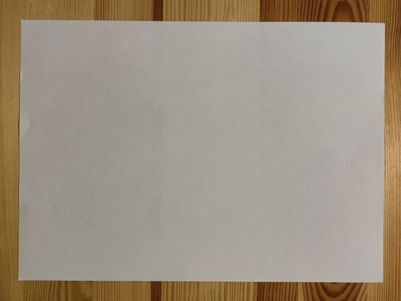
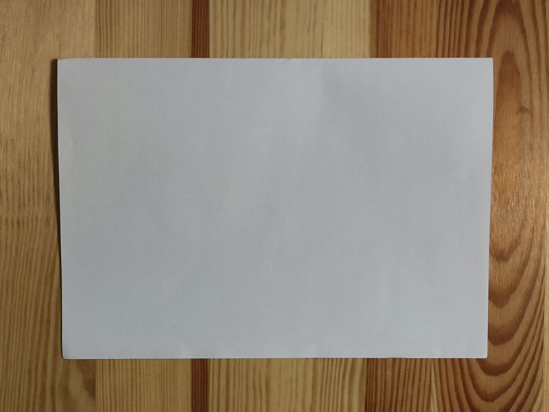
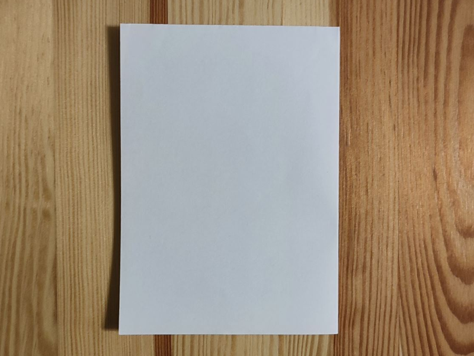
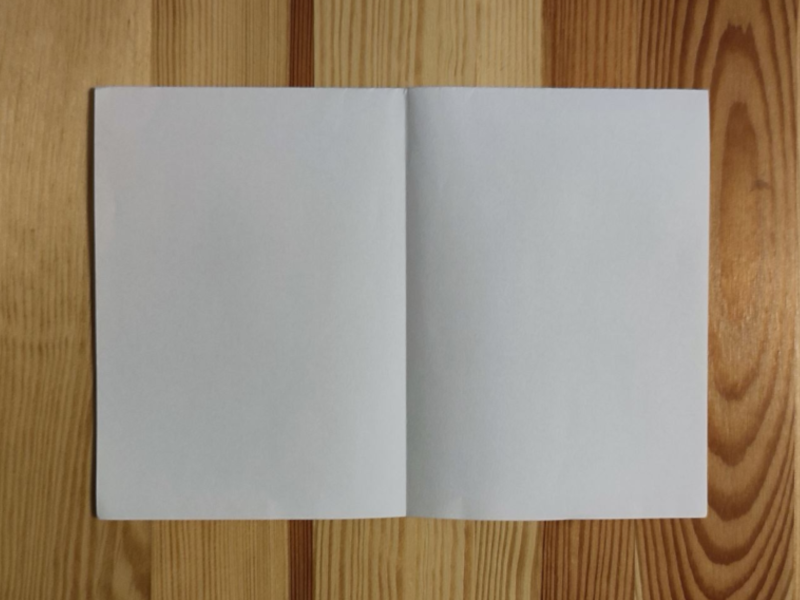
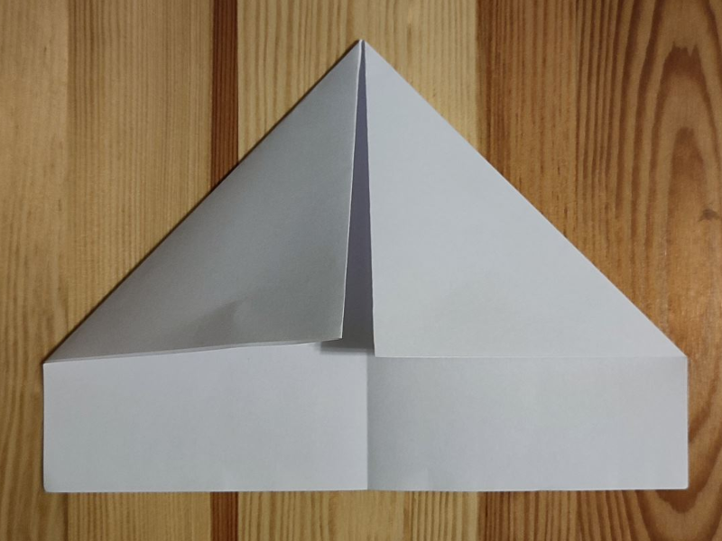
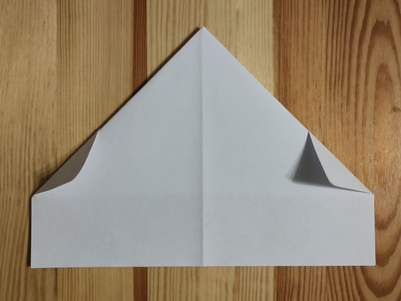
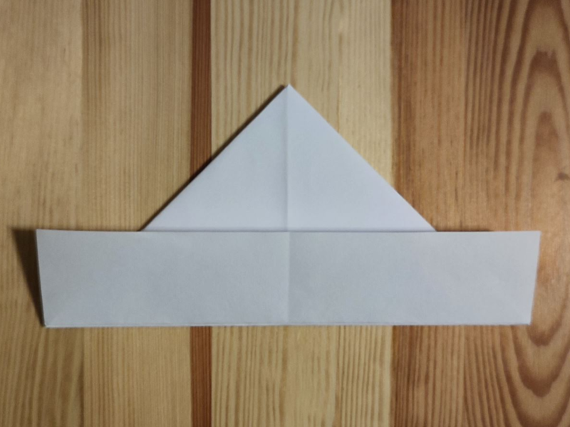
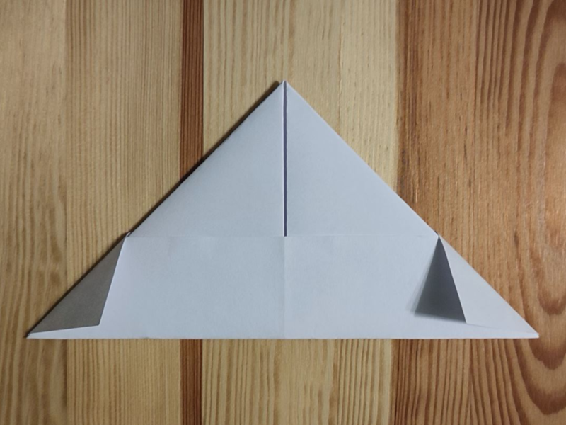

Czako do zakrycia głowy, ale nie w deszczowy dzień
Do złożenia tego modelu potrzebujemy:
1 kartka formatu A (rekomendowane: A3)
Kroki do wykonania:

Zaczynamy od kartki formatu A

Zginamy na pół

I ponownie zginamy na pół

Odginamy poprzednie zgięcie

Mając otwartą stronę na dole, górne rogi zaginamy do środkaDolny brzeg zaginamy do góry

Rożki zaginamy

Z drugiej strony również zaginamy brzeg

I również zaginamy rożki. Czako jest gotowe!